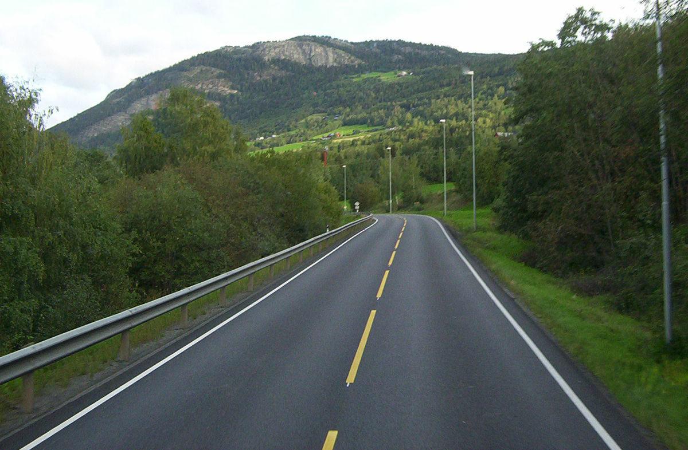

Overflow can be either visible, hidden, scroll, or auto

The background color manages opacity through RGBA
This text has a different font
This text uses a google font
Note: the images on the far left are supposed to be stars but do not show for some reason
| Brand | Model | Year | Still Stable? |
|---|---|---|---|
| Ford | GT | 1964 | no |
| Bugatti | Chiron Super Sport 300+ | 2019 | yes |
| Ferrari | f12tdf | 2015 | yes |
Positions can have five different forms:
Overflow can be either visible, hidden, scroll, or auto
Floating is used for positioning and formatting various types of content
 Panel 1 Panel 2 Panel 3The panels float next to each other
Clear can also be used to revert floating
Paragraph of text
This text and image are centered
Vertically aligned text
(space key) is for descendents
> is for child selector
+ is for adjacent sibling
~ is for general sibling selector
The background color manages opacity through RGBA